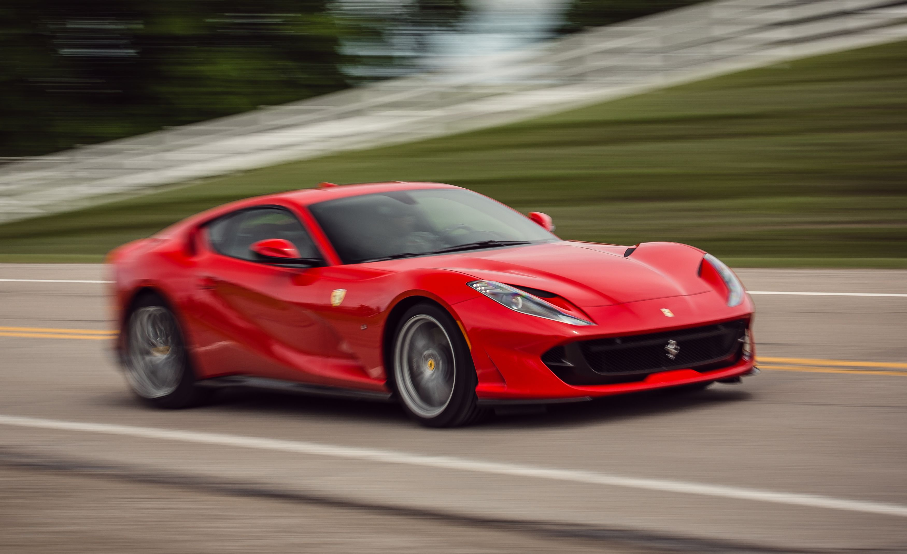

Los deportivos
Un deportivo es aquel automóvil que fue pensado y diseñado en cada detalle para circular a altas velocidades,
por lo que su planta motriz debe ser potente y su comportamiento ágil y seguro a altas velocidad.
-
El Nissan GT-R es un automóvil deportivo gran turismo cupé 2+2 con
motor delantero montado longitudinalmente y tracción en las cuatro ruedas.

-
El Lamborghini Aventador es un automóvil superdeportivo biplaza de dos puertas de tijera,
con motor central-trasero montado longitudinalmente y de tracción en las cuatro ruedas.

-
El Ferrari 812 Superfast es un automóvil Gran Turismo de 2 puertas biplaza, con motor central-delantero
montado longitudinalmente y de tracción trasera, producido por el fabricante italiano Ferrari.
